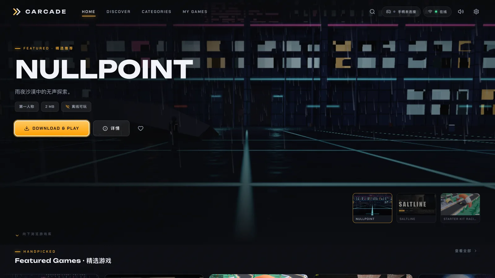

Your head unit.
Your arcade.
A landscape game centre for BYD DiLink and other Android car head units. Open and play, every game supports a gamepad, works offline, and needs no account, no login and no subscription.
No rooting, no account, no authentication server.
Install the APK on the head unit, not on a phone. Requires Android 7.0 (API 24) or newer; verified on a BYD DiLink 5.0 (Android 12, 1920×984). A gamepad is optional — touch and keyboard always work.
Currently focused on BYD head units. Other brands may work, but are out of scope, and there are no plans to add support or fix brand-specific compatibility for them.
Familiar in-car experience



Install on your head unit
- Park, then download the APK and install it the way your head unit supports (file manager, app store, USB drive, or ADB).
- Open Free Game Hub. No permissions are needed on first launch; updates can be checked from Settings.
- Plug in a gamepad and start playing — left/right to change cover, A to start, hold B to leave a game.
ADB is not needed for daily use. How you install the APK depends on the firmware; some builds require you to enable "install unknown apps" in system settings.
Installation and usage guide ↗What's new in 1.17
- Web audio PCM relay: web audio no longer relies on Chromium's own output route (dropped by the head unit). It is captured as PCM in the page and played by a native AudioTrack — a path verified audible on all channels 1–20 on a real car.
- Fixed the empty diagnostic tone: the WAV used for the A/B comparison had a zero-length data chunk, so group A never produced any sound and that comparison was invalid. It now synthesises real audio on the fly.
- Diagnostics now report where audio routes: every active playback stream carries a deviceId and device name.
- Fixed the "web audio via media channel" switch: it passed a node object where a device id string was required, so Chromium threw and silently fell back — the switch never actually did anything.
- The audio shim now lives in its own asset file, so the app and the automated probe run the exact same code.
Before you try it
This is a public beta. Head-unit firmware varies a lot, so audio, gamepads and the install flow may need per-car tuning. On slower units keep "head-unit performance mode" on (default): it disables the animated background and depth-of-field blur.
Highlights
- 10 original games, all with gamepad support (standard mapping) plus touch and keyboard
- Plays offline: game bundles are loaded locally, so it keeps working without a connection
- CoverFlow cover-flow lobby, cinematic poster art and three built-in themes
- Detail pages fit on one screen — no scrolling needed
- Head-unit performance mode: kills background animation and blur for smoother scrolling on weak hardware
- Declared as a game app (
appCategory=game) to qualify for head-unit game treatment - In-app updates: check, download, verify, and install over the top
Online platform (optional)
- Register a game in the backend and it appears in the head-unit lobby
- Remote games can be played straight online, with no download
- The backend shows daily players, play count and play time per game
- Offline is silent and graceful — built-in games keep working
Get updates
Watch the project on GitHub for new releases, or just check for updates inside the app.
Updates and signing
Installing over an earlier public build keeps your settings and installed games. The public signing key does not change. Test builds use a separate package name.
Please send a diagnostic report
There is no ADB on a head unit, so the app collects the system-side view itself. For mute audio, game-mode problems or washed-out gamepad screens, the report points straight at the cause.
- Open Settings → Head-unit diagnostics → Export diagnostic report; the report is copied to the clipboard.
- Paste it into a text editor, review it and remove passwords and anything private (device id, MAC addresses).
- Nothing is uploaded automatically — you have to attach it yourself.
- Include: car and head-unit model, Android version, connection method, steps to reproduce, expected vs actual behaviour, and the time of the failure.